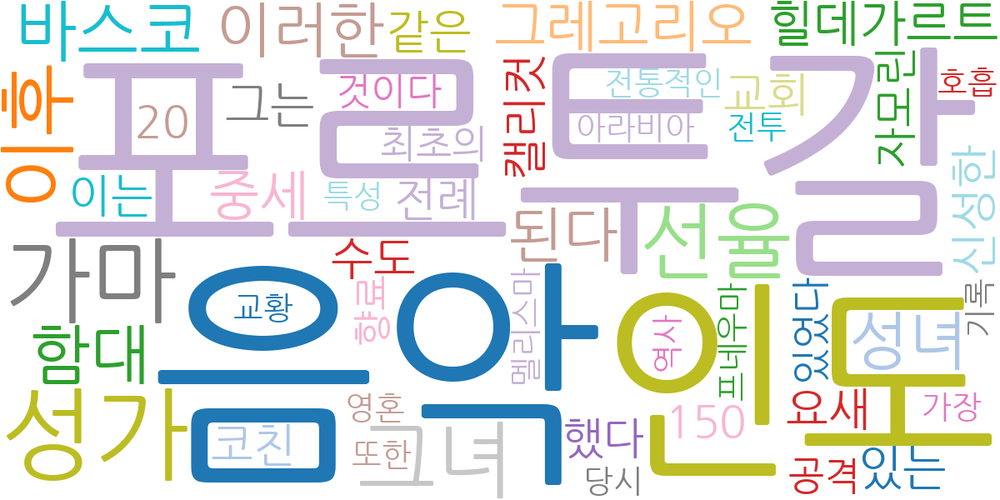
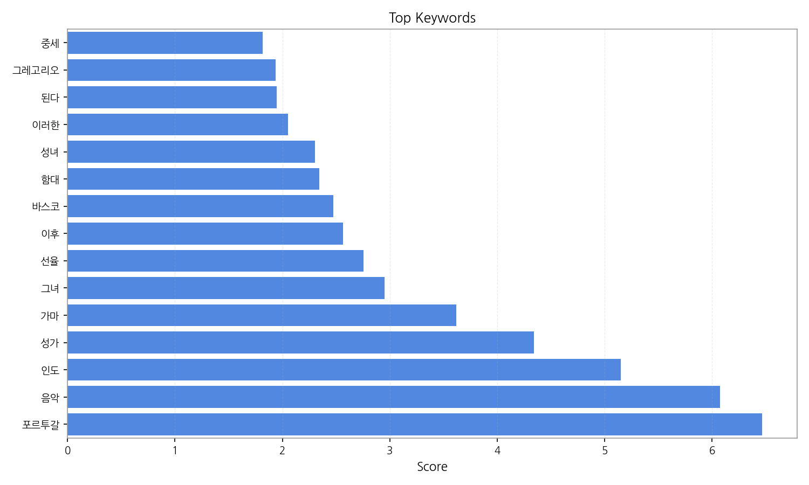
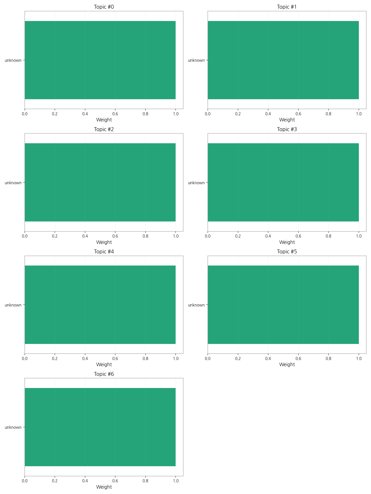
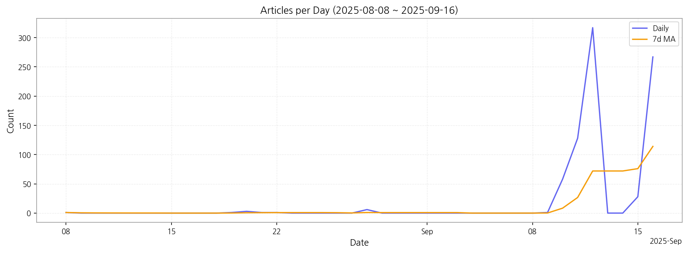

제공된 데이터는 모든 토픽의 상위 단어가 "unknown"으로 표시되어 있어, 토픽의 내용을 파악할 수 없습니다. 따라서 핵심 맥락 설명, 최근 변화, 실무 인사이트를 제공할 수 없습니다. 데이터의 "unknown" 부분을 실제 토픽 키워드로 대체하여 다시 질문해주시면 정확한 분석과 답변을 드릴 수 있습니다. 예를 들어, 각 토픽에 대한 상위 단어를 "정치", "경제", "사회", "문화", "스포츠" 와 같이 구체적으로 제공해주세요.

| Rank | Keyword | Score |
|---|---|---|
| 1 | 포르투갈 | 6.466 |
| 2 | 음악 | 6.075 |
| 3 | 인도 | 5.151 |
| 4 | 성가 | 4.340 |
| 5 | 가마 | 3.617 |
| 6 | 그녀 | 2.953 |
| 7 | 선율 | 2.756 |
| 8 | 이후 | 2.566 |
| 9 | 바스코 | 2.476 |
| 10 | 함대 | 2.344 |
| 11 | 성녀 | 2.306 |
| 12 | 이러한 | 2.052 |
| 13 | 된다 | 1.946 |
| 14 | 그레고리오 | 1.935 |
| 15 | 중세 | 1.815 |



제공된 데이터는 모든 토픽의 상위 단어가 "unknown"으로 표시되어 있어, 토픽의 내용을 파악할 수 없습니다. 따라서 핵심 맥락 설명, 최근 변화, 실무 인사이트를 제공할 수 없습니다. 데이터의 "unknown" 부분을 실제 토픽 키워드로 대체하여 다시 질문해주시면 정확한 분석과 답변을 드릴 수 있습니다. 예를 들어, 각 토픽에 대한 상위 단어를 "정치", "경제", "사회", "문화", "스포츠" 와 같이 구체적으로 제공해주세요.
| Idea | Target | Value Prop | Score |
|---|---|---|---|
| 디스플레이 사이니지 통합 관리 플랫폼 (KR) | 백화점, 대형마트, 공항 등 대규모 사이니지 운영 기업, 시설 관리 담당자, IT 관리 부서 (직원 수 500명 이상) | 중앙 집중식 관리 시스템을 통해 다양한 디스플레이 사이니지를 효율적으로 관리하고 콘텐츠를 배포합니다. 실시간 모니터링 및 원격 제어 기능으로 문제 발생 시 신속한 대응이 가능합니다. 자동화된 콘텐츠 업데이트 기능으로 운영 효율성을 높입니다. 차별화 포인트는 AI 기반 콘텐츠 최적화 기능을 제공하여 매출 증대에 기여합니다. | 4.50 |
| 스마트 팩토리 데이터 분석 서비스 (KR) | 디스플레이 제조업체, 전자 부품 제조업체, 생산 관리 담당자 (직원 수 100명 이상) | AI 기반의 스마트 팩토리 데이터 분석 서비스를 제공하여 생산성 향상 및 불량률 감소를 지원합니다. 실시간 데이터 모니터링 및 예측 분석을 통해 문제 발생을 예방하고, 효율적인 생산 관리를 지원합니다. 데이터 기반의 의사결정을 지원하여 경쟁력을 강화합니다. 차별화 포인트는 특정 산업(디스플레이)에 특화된 분석 모델을 제공합니다. | 4.20 |
| 전자 부품 조달 플랫폼 (JP) | 전자 제품 제조업체, 조달 담당자, 구매 부서 (직원 수 100명 이상) | 다양한 전자 부품 공급업체를 한 곳에서 비교하고 선택할 수 있는 플랫폼을 제공합니다. 투명하고 효율적인 조달 프로세스를 통해 비용을 절감하고, 품질 관리 및 재고 관리를 효율화합니다. 수요 예측 및 분석 기능을 통해 갑작스러운 수요 변화에 대한 대응력을 높입니다. 차별화 포인트는 블록체인 기반의 투명한 거래 시스템을 제공합니다. | 4.00 |
| 모빌리티 디스플레이 광고 서비스 (EU) | 자동차 제조사, 광고 대행사, 대중교통 운영 기업 (직원 수 200명 이상) | 모빌리티 디스플레이를 활용한 타겟팅 광고 서비스를 제공합니다. 실시간 데이터 분석을 통해 광고 효과를 측정하고 최적화합니다. 다양한 광고 형태와 콘텐츠를 지원합니다. 차별화 포인트는 위치 기반의 개인 맞춤형 광고를 제공합니다. | 3.80 |
| 디스플레이 부품 공동 구매 파트너십 (JP) | 중소 디스플레이 제조업체, 부품 구매 담당자 (직원 수 50~100명) | 다수의 중소 디스플레이 제조업체를 연결하여 디스플레이 부품을 공동 구매함으로써 원가를 절감합니다. 신뢰할 수 있는 부품 공급업체를 확보하고, 품질 관리 및 납기 관리를 지원합니다. 구매 프로세스를 간소화하고 효율성을 높입니다. 차별화 포인트는 품질 검증 시스템을 통해 안정적인 부품 공급을 보장합니다. | 3.50 |